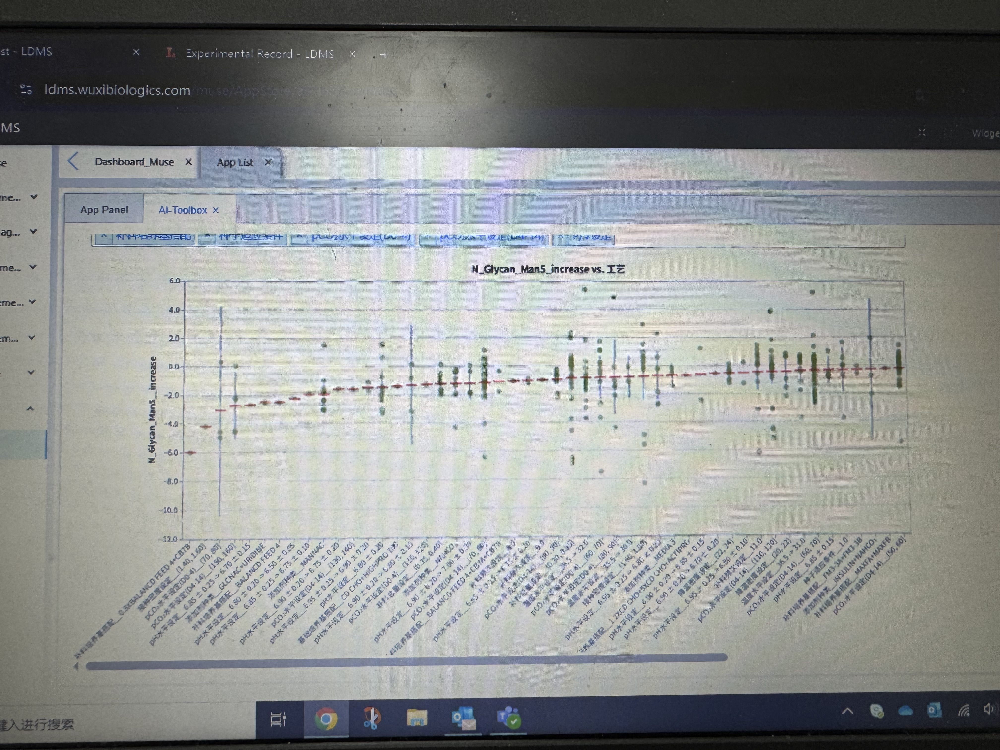
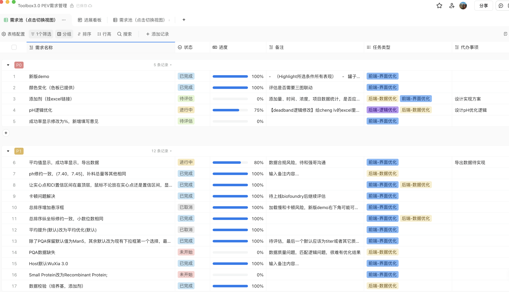

Case Study · 数据产品
细胞工艺筛选器与 Toolbox 平台
把历史工艺数据转化为可视化决策工具，帮助研发团队理解参数与结果之间的关联。
产品思路
从真实研发问题出发，定义可查询、可比较、可解释的数据产品，让历史数据从“被保存”变成“能辅助决策”。
参考截图


Case Study · 数据产品
把历史工艺数据转化为可视化决策工具，帮助研发团队理解参数与结果之间的关联。
从真实研发问题出发，定义可查询、可比较、可解释的数据产品，让历史数据从“被保存”变成“能辅助决策”。

